MY ROLE
User Research | Information Architecture | Interaction Design | Prototype and Testing | UI/Visual Design
TOOLS
Competitive Analysis | Market Research | User Interviews | Empathy Mapping | Personal Development | Site Map | User Flows | Wireframing | Affinity Mapping | Usability Testing | Style Guide | UI Kit Development | Hi-Fi Prototype
Timeline: 80 hours over 2 weeks
ABOUT
Chocolate’s Plus, a confectionary in beautiful northern Minnesota, is a main draw for locals and tourists alike. Just like major chocolate manufacturers throughout the world, Chocolates Plus can use its website to influence how customers connect with their brand and shop for their product.
CHALLENGES
Chocolates Plus is well known in the local community, but visitors to the website cannot browse or buy their favorite chocolate online. The challenge was to create a frictionless process for users to search and purchase items on the website. In addition, the site needed to maintain usability and Chocolates Plus brand aesthetics across desktop, tablet, and mobile devices.
SOLUTION
Research the experience of Chocolate's Plus customer base to update the responsiveness, branding, and purchase functionality of their website.

RESEARCH
What are users needs and pain points related to purchasing chocolate?
I conducted market research and a competitive analysis to learn more about the market and potential users.
Currently, chocolate sales account for over 60% of sales in the candy industry. While confectionary stores make up only 5% of sales,
they are typically the purveyors of higher quality, niche products – which have been increasing
in popularity as well. Adults 45 and older have higher per capita consumption and trended up during the past five years.
competitive analysis
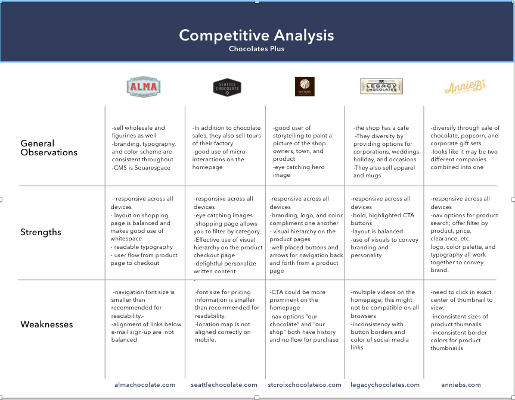
What does a potential user look like?
Using the insights from and the market research and competitive analysis, I created provisional personas
to help in preparing for user interviews.
provisional personas

What are users currently experiencing on the website?
A site audit revealed that the website didn't have a sort or search feature for users to browse.
In addition, the site didn't allow users to shop online.
User Interviews
To better understand the chocolate purchase experience from the user’s point of view, 5 interviews were conducted
in person at Chocolates Plus shop. Rapport was build with each participant and the interview script was used for consistency.

RESEARCH SYNTHESIS
What do customers need?
After the user interviews were finished, I sorted my notes using an empathy map to clarify exactly what
users were saying, thinking, feeling, and doing during their shopping experiences. I looked for patterns
and noticed that a few key ideas emerged from the majority of the interviews:
empathy map
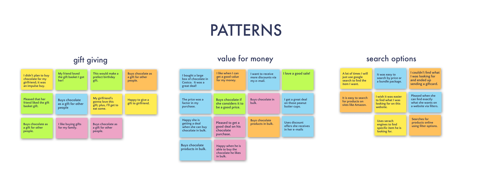
User Persona
Using the insights and patterns collected from the empathy map, I created a user persona to understand
the major needs, goals, pain points, and motivations of the majority of users.


DEFINE & IDEATE
text here
POV and HMW statements

STRATEGY
text here
POV and HMW statements
INFORMATION ARCHITECTURE
A key aspect of the design for Zeit was developing an intuitive user flow and site navigation structure that allows travelers to easily browse, search, and filter for specific information. An initial card sort activity with users and building a site map allowed me identify how the site navigation and categories could best be organized. Then, I created a site map using those categories to uderstand how the pages on the website interconnect and work together.
site map
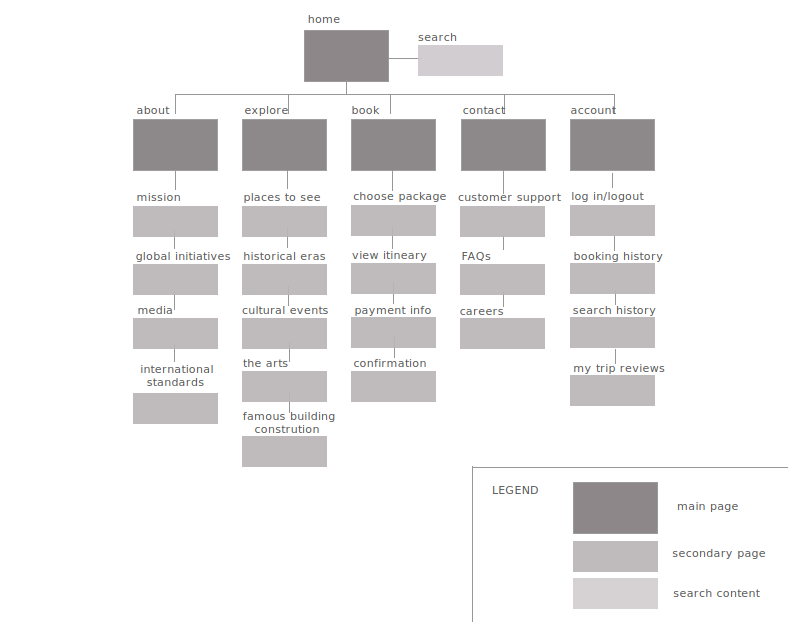

INTERACTION DESIGN
After creating the sitemap, I used a user flow and task flow to visualize the main steps and thought proccess of a user as they accomplish a task on Zeit's website from beginning to end.
user flow

task flow view here
IDEATION
Now that the architecture had taken shape, I used sketching and wireframes to begin exploring how the interface would interact to create a visual focused experience for the users. In addition, I brainstormed different concepts for the logo that depicted a Zeit trip as a modern, adventurous, captivating experience.
low-fi homepage wireframes

logo design
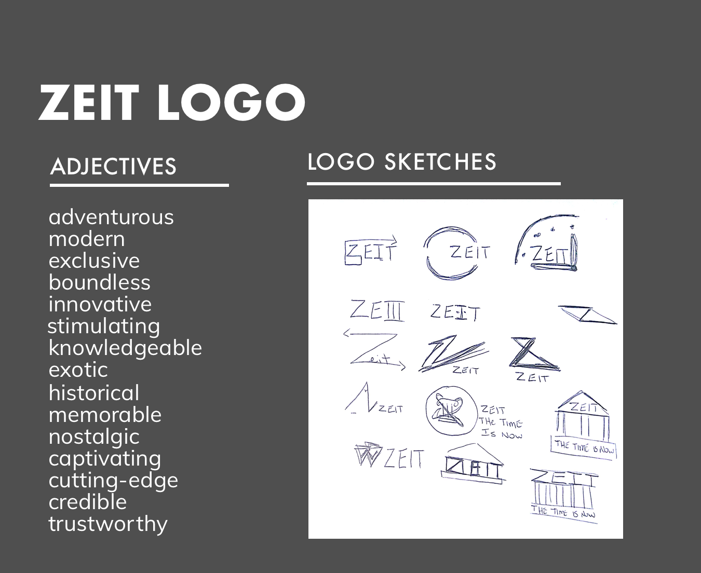
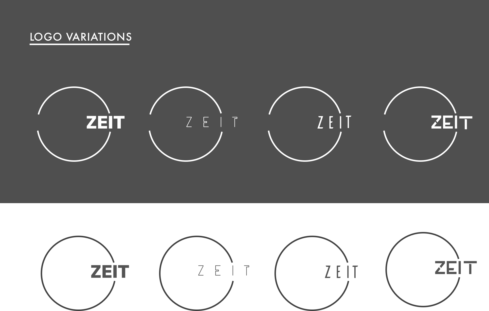
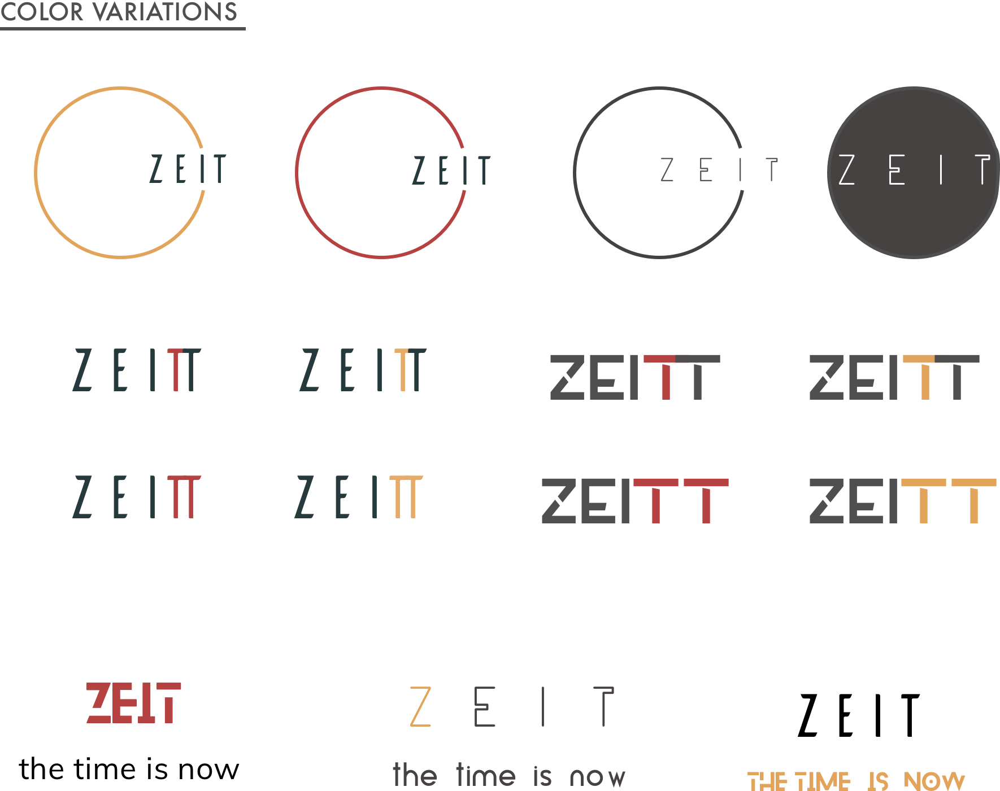
INTERFACE DESIGN
Once the interaction wireframes and initial logo idea was ready, it was time to add color, typography, and interface elements that conveyed Zeit’s brand visually. Orange was used as a highlight color to reflect the energy and adventerous nature of Zeit’s trips. The circular logo gives a feeling of movement that begins and ends with Zeit. I put together a UI Kit in order to maintain consistency with buttons, icons, headers, etc.
UI kit

PROTOTYPE AND TESTING
The testing phase is the greatest opportunity to improve products by studying how people respond and interact with ideas. I created high-fidelity updates of the wireframe with the new UI design. The prototype in InVision had clickable buttons, simulated page transitions and animations that roughly matched my experiential concepts for usability testing.
hi-fi prototype
view in InVision
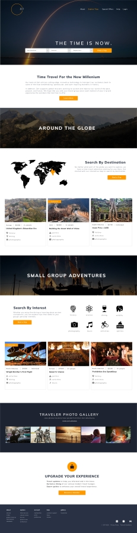 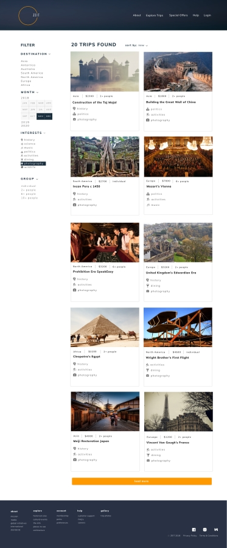 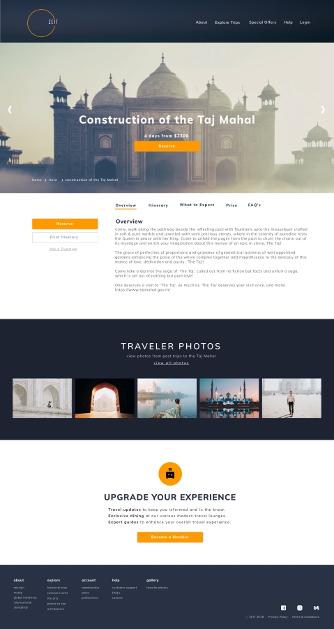
responsive hi-fi comps


User Testing
I conducted in-person testing with 3 participants who fit the demographics and profile of a potential Zeit
user. Each participants was given 2 scenarios to consider with a task to accomplish. Each participant session
was recorded and lasted approximately 10-15 minutes.
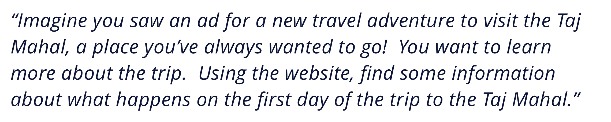
Testing and Insights
After testing the prototype with users, I created an affinity map to sort, prioritize, and rank the user
testing feedback. High priorities for the next iteration included adding the trip length and price on the
product page. In addition, I highlighted the drop down arrows on the homepage search component.
affinity map
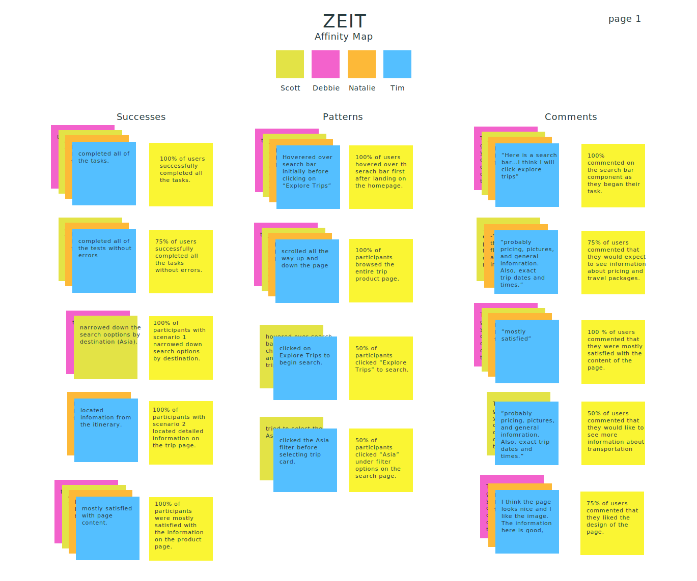
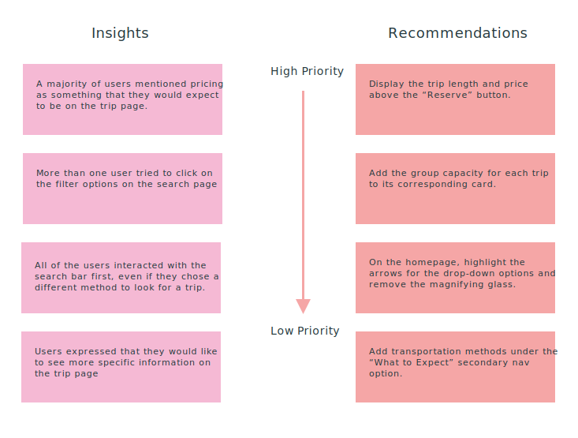
prototype iteration after testing feedback

WHAT I LEARNED
The Zeit e-commerce travel website was one of my first iterations through a design project from research
to prototype and user testing. I learned a lot about myself and the UX process throughout this project.
Here are a few of my takeaways after working on Zeit:
1. Take the time to think through research questions, goals, and planning at the beginning.
This saves time in the long run; how effective will your product and design be for users if you aren’t addressing the correct issues?
2. Well-crafted questions can get to the heart of what users feel and think during an online experience.
3. Time management is essential for staying within the scope of the project.
Success and Challenges
This was my first project designing a UI kit and I found it to be an effective way of remaining consistent
with elements and design styles throughout the design process. It also saved time and helped me keep the style
and feel of ZEIT’s brand in mind while working on the interface.
One of the most difficult but rewarding part of the project was completing a high-fidelity, functioning
protype to test with users. Aligning the visual personality and brand of Zeit with the functionality that
users needed was a challenge that pushed me as a designer. Focusing on my feedback and insights from user
research helped me make design decisions and kept me on track throughout the process.
Moving Forward
For another iteration, I would update the prototype based on feedback from more recent user testing.